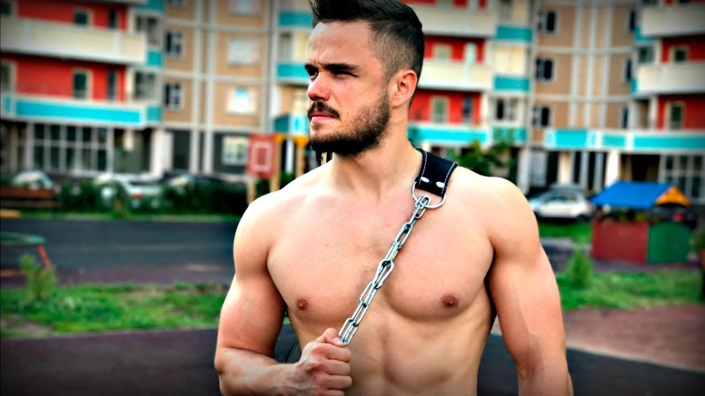
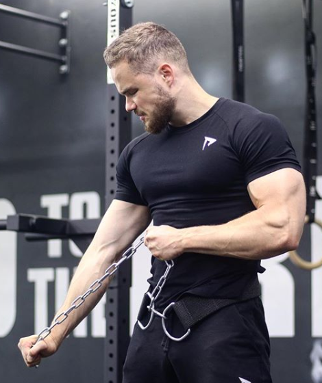
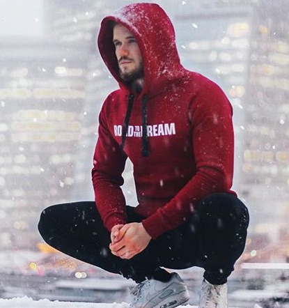
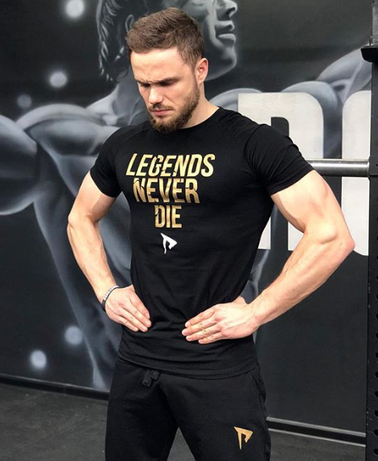

Ігор Войтенко
Популярний фітнес-блогер, який став популярний завдяки своїм роликам на YouTube та заснував спортивний рух ROAD to the DREAM
Він не побоявся внести разючі зміни в звичний життєвий уклад, завдяки чому зумів домогтися неймовірного успіху, і вразити людей по всьому світу. Він провів тривалу роботу над своїм тілом і характером, щоб знайти неймовірний досвід і поділитися ним з іншими користувачами мережі Інтернет. Зараз його проект набрав неймовірну популярність, в чому можна переконатися, вивчивши біографію.

Важкий шлях до популярності
У 2015 році Войтенко вирішив почати свій проект, і дав йому назву «Фітнес-подорож». Цим він хотів показати, що кожна людина здатна на більше, не дивлячись на вік, якщо у нього є мета і впевненість у власних силах. Два роки тому він зняв свій перший ролик і виклав його в Інтернет, назвавши «На шляху до мрії». У ньому хлопець розповів про свої плани на найближчий час. Після виходу відео Ігор приступив до виконання задуманого. З рідної України він переїхав за кордон і влаштувався на роботу, абсолютно не знаючи польської мови. У перший час молодому спортсмену доводилося нелегко. Не було грошей на елементарне. Доводилося заробляти на життя, працюючи розклеювачем рекламних оголошень. Пізніше Ігорю Войтенко вдалося влаштуватися в мережу кафе швидкого харчування MacDonalds на рядову посаду. В цілому, в закладах громадського харчування майбутній блогер трудився в поті чола близько року.
Програма тренувань
Ігор Войтенко не мав великого доходу, однак, старанно займався спортом і строго контролював свій раціон. У нього не було можливості ходити в спортивний зал, щоб удосконалювати м'язи за допомогою сучасних тренажерів. Замість цього хлопець влаштовував тренування на відкритих майданчиках або у власній кімнаті. Гантелей Войтенко не мав, а тому замінив їх двома пляшками, заповненими водою (кожна ємність вміщала в себе по 6 літрів рідини). Він використовував їх для того, щоб опрацювати м'язи рук і плечей. Молода людина нерідко відвідував міський парк, щоб не тільки потренуватися, але і надихнути своїм прикладом інших жителів. Крім того, Ігор активно займався пішою ходьбою. Відмовившись від громадського та особистого транспорту, він пересувався тільки за допомогою своїх ніг. На те, щоб дійти до місця роботи, доводилося витрачати близько 2-х годин, однак, це не зупиняло майбутню зірку Інтернету. У своїх відео, викладених в Мережу, Войтенко докладно розповідає про програму тренувань, роблячи акцент на раціоні харчування. Відверта розповідь про життя і шлях до слави допоміг йому знайти безліч передплатників і сотні відданих шанувальників, що не пропускають жодного ролика. 
Скільки заробляє
Після того, як Ігор повернувся з Польщі, близько півроку він витратив на те, щоб удосконалити себе. Кожен день він здійснював тривалі пробіжки і трудився над власною вагою до знемоги, використовуючи саморобні гантелі. Особливу увагу він приділяв брусів і поперечин, паралельно вивчаючи всі нові і нові елементи тренувань. Постійного заробітку Войтенко не мав, а тому був змушений жити на власній дачі. Монетизація дозволила йому отримувати по 2 тисячі гривень за місяць. Таким чином, молодий спортсмен не просто знайшов популярність, а й зумів витягти зі свого проекту фінансову вигоду. Він вирішив створити власну програму для тренувань, яку він пропонував усім бажаючим за окрему плату. Реалізація проекту зажадала часу і зусиль. Протягом декількох місяців Войтенко за допомогою свого брата, який є професійним програмістом, працювали над програмою, яка отримала назву «Воїн Спарти». Відеоблогер становив програму, записував освітні відео, а брат взяв на себе відповідальність за технічну частину завдання, тобто, зробив сайт, виконав прив'язку платіжних сервісів і адаптував тренувальну програму. Коли проект був запущений, Ігор зрозумів, що домігся бажаного успіху. Його програма була придбана кілька тисяч разів, а загальна виручка склала майже 4 мільйони російських рублів. Успіх не став кінцевою точкою в шляху розвитку Войтенко, зараз він продовжує працювати над собою і своїм проектом.
Ігор Войтенко і Road to the Dream
Отримавши чималу популярність в мережі Інтернет, відеоблогер вирішив створити свій власний бренд, який отримав назву Road to the Dream (коротко RD). Сам бренд був придуманий задовго до запуску проекту «Воїн Спарти». Під прапором, яке об'єднує всіх тих, хто готовий рухатися до мрії зібралося понад 23 тис осіб. Всі учасники об'єднання живуть тільки одним девізом: «Мотивація - шлях до успіху». В рамках новоствореного руху, Ігор Войтенко запустив в роботу свій інтернет-магазин, який реалізує спортивний одяг Road to the Dream. Творіть свою історю прямо зараз!